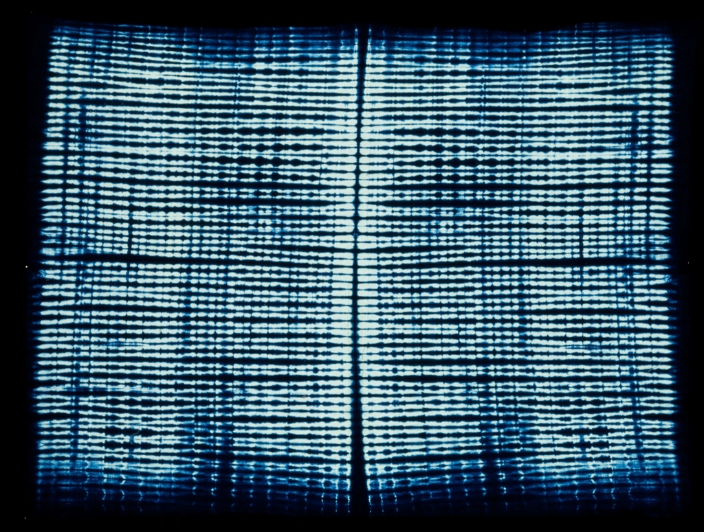

★★★★★ご来店のお客様(8か月前のご来店)
お昼頃に伺いました。BGMのない静かな店内で、千年木スムージー・カレーパン・ドーナツをいただきました(3品で900円)。ワンオペのため提供まで30分ほどかかりましたが、作りたてで素材の良さを感じる、優しい味でした。冬の時期は個別ヒーターと膝掛けがあっても寒さを感じる場面があったそうですが、店主の丁寧な気遣いもあり、時間がゆっくり流れる素敵な時間を過ごせたとのことです。
営業日:金・土・日のみ / 営業時間:確認中(店頭にてご確認ください)
VOICE

実際にいただいた口コミから、一部を匿名でご紹介しています。投稿者名・アイコン等は掲載しておりません。
掲載している写真はイメージ素材です。実店舗の写真ではありません。出典・ライセンスはページ下部の「画像クレジット」をご確認ください。
★★★★★ご来店のお客様(8か月前のご来店)
お昼頃に伺いました。BGMのない静かな店内で、千年木スムージー・カレーパン・ドーナツをいただきました(3品で900円)。ワンオペのため提供まで30分ほどかかりましたが、作りたてで素材の良さを感じる、優しい味でした。冬の時期は個別ヒーターと膝掛けがあっても寒さを感じる場面があったそうですが、店主の丁寧な気遣いもあり、時間がゆっくり流れる素敵な時間を過ごせたとのことです。
★★★★☆ご来店のお客様(7か月前のご来店)
個別ストーブとPayPay対応があり、ゆったりと過ごせたそうです。グルテンフリー・卵・乳製品は要相談、上白糖不使用とのこと。米粉のあんこサンドは甘さ控えめで食べやすく、ブラウニーも食感が良かったとのことです。提供もゆったりなので、時間に余裕があるときの訪問がおすすめだそうです。
★★★★★ご来店のお客様(4か月前のご来店)
美しいアンティークに囲まれた店内は、小さな美術館のようだったそうです。玄米入り米粉のカレーパンは、白神天然酵母・国産小麦パン粉を米油で揚げたもので、自家農園野菜がたっぷり。千年木スムージー(ブルーベリー)は410円という良心的な価格だったとのことです。店主はワンオペで大変そうだったものの、物腰柔らかく、素晴らしい接客だったと振り返っています。
★★★★★ご来店のお客様(1年前のご来店)
金・土・日だけ営業する、路地裏の隠れ家のようなお店だったそうです。玄関先では高崎市産の野菜も販売されていました。梅ソーダ・あんバターサンド・米粉ブラウニーを1000円でいただき、静かにゆっくり過ごせたとのことです。1〜2名での利用に向いているお店だと感じたそうです。
★★★★★ご来店のお客様(1年前のご来店)
狭い路地の一角にある、味のある雰囲気のカフェだったそうです。靴を脱いで上がり、レジカウンターで先にご注文・お支払いをするスタイル。店主おひとりで営まれているため、注文後にドーナツなどを揚げる時間も含めて、ゆっくりしたい方向けとのことです。玄関には採れたての野菜が並び、野菜だけの購入も歓迎だったそうです。